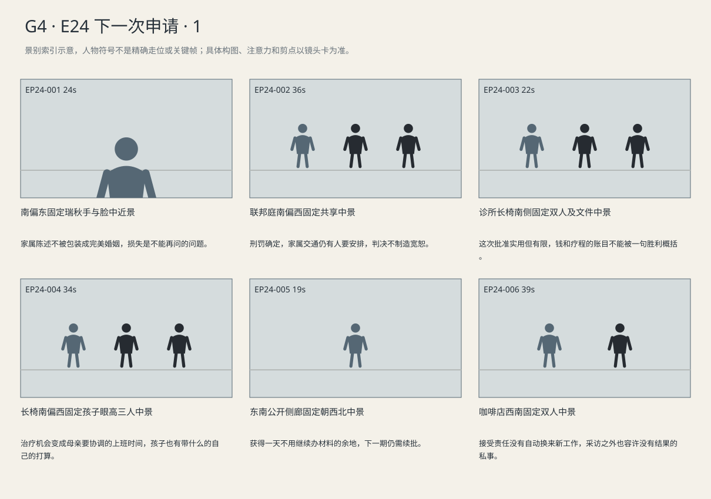
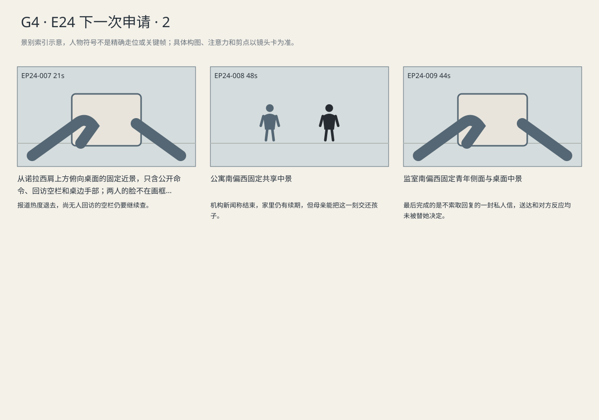

总三十年监禁落地；治疗下一次获批、再下一次仍需申请，莉娜承担责任但没有新工作，报道命令仍需核查落实。
剧本Markdown · 全部独立复制稿 · 英语字幕 · 中文字幕
详细剧本
E24-SC01 · 日·数周后联邦量刑庭 · COURT-FEDERAL
数周后的联邦量刑庭，女法官在北席，路易吉穿深蓝西装坐西桌，海伦的蓝夹在他南侧。瑞秋站在东南获准陈述的位置，棕文件袋放在身旁空椅上，里面的公司稿没有取出。她手里是自己写的纸，顶端的Brian已经被握纸的拇指磨弯一点。
瑞秋（使用英语，拿着自己写的纸，说到孩子时才放慢）：Brian and I were separated. We still had things to work out. The kids had questions for him. Now they can't ask. I want you to understand that.
中文对照：布莱恩和我已经分居，还有事情没说清楚。孩子们也有话想问他。现在没机会了。我想让你们明白这一点。
她把纸折回原来的折线，坐下，将它单独留在膝上。法官等她坐稳，才翻到判决页。
联邦法官（使用英语，清楚不停顿制造悬念）：On each count, thirty years, to run concurrently. The total prison term is thirty years. Your remaining rights are set out in the judgment.
中文对照：每项三十年，并行执行，总监禁期三十年。你保留的相应权利载于判决书。
路易吉两手从桌面慢慢收回膝上，没有转向旁听席。海伦把总刑期写在通知副本上。庭上程序结束，她合好笔，尚未离开西桌，青年向她低声问。
路易吉（使用英语，庭后压低声音，只问眼前安排）：Could you sit with my mom till her ride gets here?
中文对照：能陪我妈坐一会儿吗？等接她的人到了再走。
海伦（使用英语，收夹前答应下来，不加安慰话）：Of course. I'll find her before I go.
中文对照：当然。我走之前会去找她。
海伦看向南侧旁听出口，合起蓝夹。青年仍坐着等待押返；瑞秋把自己的纸放回棕袋，不向西桌走来。
E24-SC02 · 日·同周宾州 · CLINIC
同周宾州诊所，西侧长椅上玛拉坐南端，蓝文件夹横在膝上，手机收在右外套袋里。艾莉坐她北边，画本抱在胸前，绿蜡笔夹在指间。凯文站椅南端，将两张日期不同的费用文件放上硬夹板。北侧治疗门暂时关着，东接待台的叫号屏静音。
凯文（使用英语，顺着日期逐张指，让她自己对上）：The settlement covered winter. This approval is for the next course, under the policy. Different bills. I checked.
中文对照：和解款付的是冬季那一轮。这次批的是保单下的下一疗程。两笔账，我核过了。
玛拉沿两张不同日期读过，确认新批准不是重复收同一期费用，将两页分别夹到蓝夹的冬季与下一疗程隔页。北门打开，医生走到长椅旁，把预约单交她。
医生（使用英语，把预约单交给母亲）：Tuesday, ten o'clock. Same room. Bring the medication list again.
中文对照：周二十点，还是那个房间，再带上用药清单。
玛拉取手机看排班，预约单仍由自己压在夹板上；艾莉把鲸的画本竖起，没打断大人。
玛拉（使用英语，把批准落实到真实时间安排）：Tuesday. I need to switch my shift.
中文对照：周二。我得换个班。
医生（使用英语，等她处理眼前安排）：Do you need a minute?
中文对照：要先留点时间给你吗？
玛拉（使用英语，不再为工作先放弃已拿到的治疗时间）：No. Keep the appointment. I'll work it out.
中文对照：不用，预约留着。我来安排。
她先把周二十点存进日历，再另记一个换班待办；随后把手机放回右外套袋，暂不拨号。
艾莉把画本放到膝上，自己抬头。
艾莉（使用英语，自己向医生问）：Can I bring my whale?
中文对照：能带我的鲸吗？
医生（使用英语，弯身看孩子但不拿画）：Please do.
中文对照：当然带来。
医生没有把画抽走，只用手指在空中比了一下鲸的大小。艾莉抱起本子，脚踩到地上准备走。凯文将之后续批的空白清单从文件袋拿出。
凯文（使用英语，取出未来清单，察觉她已准备走）：For the course after that, you'll need to apply again. I'll send the checklist early.
中文对照：再下一个疗程，你还得申请。我会提前把清单发你。
玛拉的手已经压在夹扣上。
玛拉（使用英语，已经开始合夹）：But not today?
中文对照：但不是今天吧？
凯文没有把清单插进她的文件夹，将它收回自己包里。
凯文（使用英语，让她合上）：Not today.
中文对照：不是今天。
玛拉扣好蓝夹，左手抱夹，右手牵起艾莉。两人向南出口走，凯文留在长椅边把预约日期记进自己的待办。
E24-SC03 · 下午·数日后 · CAFE
数日后，咖啡店西北桌只剩两杯快喝完的咖啡。莉娜坐北，灰信封已收起大部分私人处置文件，最后一页已签，按原折痕折好但还露在封口外。诺拉坐南，手机扣在红本上，手边另放一张公开监管命令的打印页。东吧台有人收杯，没有录音设备架在她们之间。
诺拉（使用英语，等她整理文件的手停住再问）：Did you sign?
中文对照：签了吗？
莉娜把折好的签字页只推入信封一半，按住仍露在外面的纸边才回答。
莉娜（使用英语，按住自己的信封，直说代价）：Yes. I've accepted the findings. I'm out of a job, and I owe a fine. I reported it, but I kept signing.
中文对照：签了，结论我认。工作没了，还得交罚款。我是举报了，可后来那些表，我也照样签了。
莉娜把半收着签字页的信封留在膝上，手指松开纸边。诺拉的手机一直扣着，没有把这段当采访录下。
诺拉（使用英语，先看对方是否愿意说私事）：How did the interview go?
中文对照：面试怎么样？
莉娜（使用英语，把自己最不想答的问话说出来）：They asked why I left.
中文对照：他们问我为什么离职。
诺拉（使用英语，问本人处理方式，不替她解释）：What did you tell them?
中文对照：你怎么说的？
莉娜（使用英语，承认后果仍未收束）：That there's a finding against me. I sent the link. They haven't called.
中文对照：说调查认定我也有责任。我把链接发了，他们还没回电话。
莉娜将签字页完全收进信封，压平封口；信封仍在膝上左掌下，她才看向诺拉带来的公开命令。
诺拉没有伸手拿她的文件，转而把那张公开命令翻正。莉娜看见页首文号。
莉娜（使用英语，看向诺拉带来的单页）：Still on the front page?
中文对照：还在首页吗？
诺拉（使用英语，推过公开命令，翻到没填完的回访表）：No. The regulator ordered those files reviewed again. I'm checking who's actually had a call.
中文对照：不在了。监管要求那些档案重审。我在查，到底谁真接到了回访电话。
诺拉把随页的小表翻到背面，几行待核回访仍空着。莉娜指了指自己空了的咖啡杯，将杯子挪给从东吧台来的服务员；她自己的信封始终留在膝上左掌下。诺拉收好命令和红本，临走前将杯钱放在托盘边。
E24-SC04 · 夜·次周 · MARA-HOME
次周晚上，公寓东厨房暖灯亮着，中央桌上两份晚饭已经摆好。玛拉的蓝文件夹靠南桌沿，艾莉坐北侧，绿蜡笔在右手，画本翻到大翅膀的鲸。东边小电视开着，声音低。
电视主播声音（使用英语，电视平直播报）：The sentencing closes the final major chapter in the case.
中文对照：量刑为这起案件的最后一个主要阶段画上句号。
玛拉的手机在外套右袋振动，她取出查看“再下一疗程”的续批提醒。艾莉等了一会儿，才把画本向她转一半。
艾莉（使用英语，等母亲把手机放下）：Mom. I changed the wings.
中文对照：妈妈，我把翅膀改了。
玛拉把提醒存到日历，随即手机屏朝下放在蓝夹旁。她绕到艾莉西侧，拉开椅子坐下。
玛拉（使用英语，坐到孩子身边）：Show me. Why are they so big now?
中文对照：给我看看。怎么变得这么大了？
艾莉用蜡笔沿新翅膀描一圈，把画本又向母亲挪一点。
艾莉（使用英语，把画本挪给母亲一半）：The little ones couldn't lift him. He kept landing in the soup.
中文对照：小翅膀托不动他，他总掉进汤里。
艾莉把桌边的黄蜡笔递给玛拉，自己右手仍握绿蜡笔。玛拉接过黄笔，刚伸向鲸翅下方，艾莉用绿笔圈住汤碗。
艾莉（使用英语，纠正母亲下笔的位置）：Not there. That's the soup.
中文对照：不是那里，那是汤。
玛拉（使用英语，把决定交还给画画的人）：Right. Where can I put this?
中文对照：好，那我涂哪儿？
艾莉（使用英语，用绿笔指出母亲可以涂的位置，不重复交笔）：Here. You can do the bubbles.
中文对照：这里。泡泡给你涂。
玛拉把笔收回一点，照她指的空处补色。
玛拉看了看画里的汤碗，笑出很短一声。两人继续把刚才圈出的泡泡补上颜色。电视仍在东侧低声播下一条新闻，蓝夹没有重新打开。
E24-SC05 · 夜·同周监室 · PRISON
同周夜里，监室北窗剩下一条黑蓝天色。中央带防护罩的中性顶灯亮着，光落到西桌的纸页和双手；南门观察口的漏光只在门边。路易吉穿浅灰长袖囚服，坐西侧固定桌前，东侧床铺已整理。桌上是已经写好的信草稿和一个空信封，右手拿笔，左手按住纸角。南门外清洁桶轮子慢慢经过。他先检查草稿，把末尾一条索要近况的旧句划掉；那一句不读出、不作公众口号。笔停到称呼旁，补一个逗号，才低头核读保留的文字。
路易吉（使用英语，低头核读已有信稿，不向镜头讲话）：Mara, I don't know how things are at home. I hope Ellie is still getting treatment. You don't have to send me any news.
中文对照：玛拉，不知道你们家最近怎么样。我希望艾莉还在接受治疗。你不用告诉我近况。
他停下来，笔尖悬在落款空行前，没有添上向外界讲话的段落。
路易吉（使用英语，读到自己的名字后才签名）：You don't have to write back. I won't speak for you. Luigi.
中文对照：你不用回信。我不会再替你发言。路易吉。
他核对被划掉的旧句仍不可误作正文，说完名字才落笔，签下Luigi。放笔后，他将纸按原折线折好，装入信封，把未写公开口号的正面朝下留在桌前。信封没有离开这间监室，也没有出现收信人的回应。他把双手松开，坐回椅背。
景别索引板
简化人物符号仅用于检索景别。完整镜头卡、信息变化及相邻剪点另页阅读。


逐镜复制稿
EP24-001 · 制作号E24-SH001 · 24s · 南偏东固定瑞秋手与脸中近景
家属陈述不被包装成完美婚姻，损失是不能再问的问题。
成片采用 [0,24) 秒；1个生成候选，技术边界不是剪点。候选未生成。
16:9横屏，当代美国真人现实悬疑。环境低至中等饱和，人物肤色保持真实差异与自然纹理；深黑保留衣料和道具分离，白纸与白领高光柔和有层次。冷暖来自本镜已有物理光源，不统一青橙、不磨皮、不以整体欠曝制造悬疑。遵循本镜机位、表演与焦点，不擅自追加缓推、急变焦或摇晃。
场次风格：本场时段：日·数周后联邦量刑庭。本场光源启用及强度以明确时段和正文为准，同场反打继承光源方向；不因景别变化任意换色温。 本地光色与材质：北侧采光与中性照明配合浅灰石材和木纹，独立于州法院但继承相同肤色、黑位及高光规则；白衬衫、黑袍和纸面都留细节。
总生成长度26秒，为中间24秒采用区间保留开头和结尾各1秒自然余量，不增添剧情。
人物：
瑞秋，45岁白人女性，深金棕齐肩发、棕羊毛外套、黑连衣裙、素银耳钉，棕色文件袋。声音中低、压住情绪，不全程哽咽。
本镜画外继承，声源/人物不入画：路易吉，26岁意裔男性，深棕短卷发、浓眉、棕眼、较长椭圆脸、清楚下颌、精瘦体态；深蓝西装、白衬衫、无领带，面容略显疲惫但年龄外观不突变。声音中低、清楚克制。
本镜画外继承，声源/人物不入画：联邦法官，58岁白人女性，灰棕短发、黑法袍.
声源与背景限定：画面留在瑞秋本人陈述与手纸；北侧法官和西桌青年在画外静听，不额外插入反应镜或对白。
环境与光源：相同方向约定但浅灰石材/木纹与较宽旁听区；独立场景，不把两法官混用。量刑、认罪由联邦法官；重复追诉由州法官。
景别/机位：南偏东固定瑞秋手与脸中近景
构图：东南陈述位置为中景，前景为瑞秋自己的纸；棕袋留身旁空椅，属于画外继承状态，公司稿未取出。本成片镜按如下连续机位与人物动作执行：南偏东固定瑞秋手与脸中近景，陈述对象是北席，青年画外；不插回忆与哭泣特写。 她展开自己写的纸，讲分居与孩子还没问完的问题，手指停在磨弯的Brian处。说完折纸坐下，保留一口能坐稳的气，再由北席处理判决。
起始画面：瑞秋站东南陈述位置，自己的纸在手，棕袋在身旁空椅、公司稿留袋内。
事件与表演：她展开自己写的纸，讲分居与孩子还没问完的问题，手指停在磨弯的Brian处。说完折纸坐下，保留一口能坐稳的气，再由北席处理判决。
注意力变化：量刑将给青年一个数字，家属的损失尚未被说完。 → 家属陈述不被包装成完美婚姻，损失是不能再问的问题。
摄影机：南偏东固定瑞秋手与脸中近景，陈述对象是北席，青年画外；不插回忆与哭泣特写。
焦点：按人物当前任务保持共享画面可读；家属陈述不被包装成完美婚姻，损失是不能再问的问题。 不按每句说话人自动反打；细字由后期证据页必要叠加，不要求景深同时清楚全部正文。
结束状态：家属陈述不被包装成完美婚姻，损失是不能再问的问题。；具体动作终态：她展开自己写的纸，讲分居与孩子还没问完的问题，手指停在磨弯的Brian处。说完折纸坐下，保留一口能坐稳的气，再由北席处理判决。
声音：<瑞秋自然声音经旁听区麦克风，折纸和落座声，末端接北席翻判决页。；只保留本镜对白表所列可辨英语，原场内画外、电话、直播声源关系保持；不增配解释旁白。>
(无背景音乐；先以表演、对白、真实环境声成立，禁止在技术段接缝加音乐遮掩。)
准确对白按顺序：
瑞秋向联邦法官，拿着自己写的纸，说到孩子时才放慢，只使用英语说一次：{Brian and I were separated. We still had things to work out. The kids had questions for him. Now they can't ask. I want you to understand that.}
只说列出的英语原句；导演说明不发声，不说中文译文，不额外加旁白或对白。手机/公文/字幕均由后期叠加，生成画面不排字。单镜连续，不加入内部切镜；前后保持身份、服装、门窗、物件与接触状态一致。静帧起态备稿
16:9横屏，当代美国真人现实悬疑。环境低至中等饱和，人物肤色保持真实差异与自然纹理；深黑保留衣料和道具分离，白纸与白领高光柔和有层次。冷暖来自本镜已有物理光源，不统一青橙、不磨皮、不以整体欠曝制造悬疑。遵循本镜机位、表演与焦点，不擅自追加缓推、急变焦或摇晃。
场次风格：本场时段：日·数周后联邦量刑庭。本场光源启用及强度以明确时段和正文为准，同场反打继承光源方向；不因景别变化任意换色温。 本地光色与材质：北侧采光与中性照明配合浅灰石材和木纹，独立于州法院但继承相同肤色、黑位及高光规则；白衬衫、黑袍和纸面都留细节。
瑞秋，45岁白人女性，深金棕齐肩发、棕羊毛外套、黑连衣裙、素银耳钉，棕色文件袋。声音中低、压住情绪，不全程哽咽。
相同方向约定但浅灰石材/木纹与较宽旁听区；独立场景，不把两法官混用。量刑、认罪由联邦法官；重复追诉由州法官。
南偏东固定瑞秋手与脸中近景；起态构图：瑞秋站东南陈述位置，自己的纸在手，棕袋在身旁空椅、公司稿留袋内。。空间方位按上列环境，人物只处于起态；本镜后续调度不出现在静帧。此图不描画尚未发生的动作，不生成字幕和公文长字。
| 英语原句 | 中文对照 | 预定窗口 |
|---|
| 瑞秋：Brian and I were separated. We still had things to work out. The kids had questions for him. Now they can't ask. I want you to understand that. | 布莱恩和我已经分居，还有事情没说清楚。孩子们也有话想问他。现在没机会了。我想让你们明白这一点。 | 0.8–15.72s |
观众信息：量刑将给青年一个数字，家属的损失尚未被说完。 → 家属陈述不被包装成完美婚姻，损失是不能再问的问题。
切点：成片剪点由本镜结束后注意与任务发生变化决定：家属陈述不被包装成完美婚姻，损失是不能再问的问题。 技术生成段边界不触发剪辑。
接口：下一成片镜 E24-SH002。同场时承接本镜已完成动作，不重复表演；跨场依剧本时间和空间建立。
EP24-002 · 制作号E24-SH002 · 36s · 联邦庭南偏西固定共享中景
刑罚确定，家属交通仍有人要安排，判决不制造宽恕。
成片采用 [24,60) 秒；2个生成候选，技术边界不是剪点。候选未生成。
成片镜 E24-SH002 共36秒；下面2个独立生成候选共同服务本镜。技术接续不等于成片剪点，不能将本文件整段提交为一次任务。先制作并核验连续表演、机位和声线，再决定延长或覆盖方案；当前无实际媒体。
【E24-SH002-G01 · 本镜采用 0—18 秒】
16:9横屏，当代美国真人现实悬疑。环境低至中等饱和，人物肤色保持真实差异与自然纹理；深黑保留衣料和道具分离，白纸与白领高光柔和有层次。冷暖来自本镜已有物理光源，不统一青橙、不磨皮、不以整体欠曝制造悬疑。遵循本镜机位、表演与焦点，不擅自追加缓推、急变焦或摇晃。
场次风格：本场时段：日·数周后联邦量刑庭。本场光源启用及强度以明确时段和正文为准，同场反打继承光源方向；不因景别变化任意换色温。 本地光色与材质：北侧采光与中性照明配合浅灰石材和木纹，独立于州法院但继承相同肤色、黑位及高光规则；白衬衫、黑袍和纸面都留细节。
总生成长度20秒，为中间18秒采用区间保留开头和结尾各1秒自然余量，不增添剧情。
人物：
以下为连续镜的身份库；人物是否已入画、离场及持物只依本段起态与动作，不能把整镜所有角色同时塞入本段。
联邦法官，58岁白人女性，灰棕短发、黑法袍.
路易吉，26岁意裔男性，深棕短卷发、浓眉、棕眼、较长椭圆脸、清楚下颌、精瘦体态；深蓝西装、白衬衫、无领带，面容略显疲惫但年龄外观不突变。声音中低、清楚克制。
海伦，55岁白人女性，短灰金发、窄长脸、深灰西装、灰蓝衬衫、银色腕表，蓝色案卷夹。低中音、短句准确，保留等对方回答的停顿。
瑞秋，45岁白人女性，深金棕齐肩发、棕羊毛外套、黑连衣裙、素银耳钉，棕色文件袋。声音中低、压住情绪，不全程哽咽。
环境与光源：相同方向约定但浅灰石材/木纹与较宽旁听区；独立场景，不把两法官混用。量刑、认罪由联邦法官；重复追诉由州法官。
景别/机位：联邦庭南偏西固定共享中景
构图：沿用该成片镜既定机位和场景方向；当前站位、朝向与持物：女法官翻到判决页，青年西桌两手摊着。
起始画面：女法官翻到判决页，青年西桌两手摊着。
事件与表演：北席完整宣判三十年并行总三十年，青年收手，律师在副本记总数。 同一成片镜、同一相机路径与速度；接续上一段已发生动作，不重做开头。
注意力变化：女法官翻到判决页，青年西桌两手摊着。 → 北席完整宣判三十年并行总三十年，青年收手，律师在副本记总数。 角色与物件停留在这一步的连续状态，机位及照明不重置。
摄影机：联邦庭南偏西固定共享中景，北席宣判、西桌青年与律师在同一空间；庭后低语只在程序结束才发生，不剪成抢着回应判决。
焦点：仅响应本段当前动作与受话关系；不预先转向尚未发生的后段事件。
结束状态：北席完整宣判三十年并行总三十年，青年收手，律师在副本记总数。 角色与物件停留在这一步的连续状态，机位及照明不重置。
声音：<法院通风和安静大厅底声；当前空间连续环境底声；拟音只随本段真实动作与物件接触发生，已完成事件不重演；可辨英语仅为下列本段对白。>
(无背景音乐；先以表演、对白、真实环境声成立，禁止在技术段接缝加音乐遮掩。)
准确对白按顺序：
联邦法官向路易吉，清楚不停顿制造悬念，只使用英语说一次：{On each count, thirty years, to run concurrently. The total prison term is thirty years. Your remaining rights are set out in the judgment.}
只说列出的英语原句；导演说明不发声，不说中文译文，不额外加旁白或对白。手机/公文/字幕均由后期叠加，生成画面不排字。单镜连续，不加入内部切镜；前后保持身份、服装、门窗、物件与接触状态一致。
【E24-SH002-G02 · 本镜采用 18—36 秒】
16:9横屏，当代美国真人现实悬疑。环境低至中等饱和，人物肤色保持真实差异与自然纹理；深黑保留衣料和道具分离，白纸与白领高光柔和有层次。冷暖来自本镜已有物理光源，不统一青橙、不磨皮、不以整体欠曝制造悬疑。遵循本镜机位、表演与焦点，不擅自追加缓推、急变焦或摇晃。
场次风格：本场时段：日·数周后联邦量刑庭。本场光源启用及强度以明确时段和正文为准，同场反打继承光源方向；不因景别变化任意换色温。 本地光色与材质：北侧采光与中性照明配合浅灰石材和木纹，独立于州法院但继承相同肤色、黑位及高光规则；白衬衫、黑袍和纸面都留细节。
总生成长度20秒，为中间18秒采用区间保留开头和结尾各1秒自然余量，不增添剧情。
人物：
以下为连续镜的身份库；人物是否已入画、离场及持物只依本段起态与动作，不能把整镜所有角色同时塞入本段。
联邦法官，58岁白人女性，灰棕短发、黑法袍.
路易吉，26岁意裔男性，深棕短卷发、浓眉、棕眼、较长椭圆脸、清楚下颌、精瘦体态；深蓝西装、白衬衫、无领带，面容略显疲惫但年龄外观不突变。声音中低、清楚克制。
海伦，55岁白人女性，短灰金发、窄长脸、深灰西装、灰蓝衬衫、银色腕表，蓝色案卷夹。低中音、短句准确，保留等对方回答的停顿。
瑞秋，45岁白人女性，深金棕齐肩发、棕羊毛外套、黑连衣裙、素银耳钉，棕色文件袋。声音中低、压住情绪，不全程哽咽。
环境与光源：相同方向约定但浅灰石材/木纹与较宽旁听区；独立场景，不把两法官混用。量刑、认罪由联邦法官；重复追诉由州法官。
景别/机位：联邦庭南偏西固定共享中景
构图：沿用该成片镜既定机位和场景方向；当前站位、朝向与持物：北席完整宣判三十年并行总三十年，青年收手，律师在副本记总数。 角色与物件停留在这一步的连续状态，机位及照明不重置。
起始画面：北席完整宣判三十年并行总三十年，青年收手，律师在副本记总数。 角色与物件停留在这一步的连续状态，机位及照明不重置。
事件与表演：程序结束青年请求陪母亲等车，律师答应收夹看南出口，青年留座等待押返。 同一成片镜、同一相机路径与速度；接续上一段已发生动作，不重做开头。
注意力变化：北席完整宣判三十年并行总三十年，青年收手，律师在副本记总数。 角色与物件停留在这一步的连续状态，机位及照明不重置。 → 程序结束青年请求陪母亲等车，律师答应收夹看南出口，青年留座等待押返。 角色与物件停留在这一步的连续状态，机位及照明不重置。
摄影机：联邦庭南偏西固定共享中景，北席宣判、西桌青年与律师在同一空间；庭后低语只在程序结束才发生，不剪成抢着回应判决。
焦点：仅响应本段当前动作与受话关系；不预先转向尚未发生的后段事件。
结束状态：程序结束青年请求陪母亲等车，律师答应收夹看南出口，青年留座等待押返。 角色与物件停留在这一步的连续状态，机位及照明不重置。
声音：<法院通风和安静大厅底声；当前空间连续环境底声；拟音只随本段真实动作与物件接触发生，已完成事件不重演；可辨英语仅为下列本段对白。>
(无背景音乐；先以表演、对白、真实环境声成立，禁止在技术段接缝加音乐遮掩。)
准确对白按顺序：
路易吉向海伦，庭后压低声音，只问眼前安排，只使用英语说一次：{Could you sit with my mom till her ride gets here?}
海伦向路易吉，收夹前答应下来，不加安慰话，只使用英语说一次：{Of course. I'll find her before I go.}
只说列出的英语原句；导演说明不发声，不说中文译文，不额外加旁白或对白。手机/公文/字幕均由后期叠加，生成画面不排字。单镜连续，不加入内部切镜；前后保持身份、服装、门窗、物件与接触状态一致。静帧起态备稿
16:9横屏，当代美国真人现实悬疑。环境低至中等饱和，人物肤色保持真实差异与自然纹理；深黑保留衣料和道具分离，白纸与白领高光柔和有层次。冷暖来自本镜已有物理光源，不统一青橙、不磨皮、不以整体欠曝制造悬疑。遵循本镜机位、表演与焦点，不擅自追加缓推、急变焦或摇晃。
场次风格：本场时段：日·数周后联邦量刑庭。本场光源启用及强度以明确时段和正文为准，同场反打继承光源方向；不因景别变化任意换色温。 本地光色与材质：北侧采光与中性照明配合浅灰石材和木纹，独立于州法院但继承相同肤色、黑位及高光规则；白衬衫、黑袍和纸面都留细节。
联邦法官，58岁白人女性，灰棕短发、黑法袍.
路易吉，26岁意裔男性，深棕短卷发、浓眉、棕眼、较长椭圆脸、清楚下颌、精瘦体态；深蓝西装、白衬衫、无领带，面容略显疲惫但年龄外观不突变。声音中低、清楚克制。
海伦，55岁白人女性，短灰金发、窄长脸、深灰西装、灰蓝衬衫、银色腕表，蓝色案卷夹。低中音、短句准确，保留等对方回答的停顿。
瑞秋，45岁白人女性，深金棕齐肩发、棕羊毛外套、黑连衣裙、素银耳钉，棕色文件袋。声音中低、压住情绪，不全程哽咽。
相同方向约定但浅灰石材/木纹与较宽旁听区；独立场景，不把两法官混用。量刑、认罪由联邦法官；重复追诉由州法官。
联邦庭南偏西固定共享中景；起态构图：女法官翻到判决页，青年西桌两手摊着。。空间方位按上列环境，人物只处于起态；本镜后续调度不出现在静帧。此图不描画尚未发生的动作，不生成字幕和公文长字。
| 英语原句 | 中文对照 | 预定窗口 |
|---|
| 联邦法官：On each count, thirty years, to run concurrently. The total prison term is thirty years. Your remaining rights are set out in the judgment. | 每项三十年，并行执行，总监禁期三十年。你保留的相应权利载于判决书。 | 0.8–13.62s |
| 路易吉：Could you sit with my mom till her ride gets here? | 能陪我妈坐一会儿吗？等接她的人到了再走。 | 18.8–24.8s |
| 海伦：Of course. I'll find her before I go. | 当然。我走之前会去找她。 | 25.45–29.88s |
观众信息：家属的损失已经说出，刑期仍未知。 → 刑罚确定，家属交通仍有人要安排，判决不制造宽恕。
切点：成片剪点由本镜结束后注意与任务发生变化决定：刑罚确定，家属交通仍有人要安排，判决不制造宽恕。 技术生成段边界不触发剪辑。
接口：量刑结果完整落地后切宾州同周续批；不做法槌和诊疗机器的夸张节拍匹配，让不同人物保持自己的时间。
EP24-003 · 制作号E24-SH004 · 22s · 诊所长椅南侧固定双人及文件中景
这次批准实用但有限，钱和疗程的账目不能被一句胜利概括。
成片采用 [60,82) 秒；1个生成候选，技术边界不是剪点。候选未生成。
16:9横屏，当代美国真人现实悬疑。环境低至中等饱和，人物肤色保持真实差异与自然纹理；深黑保留衣料和道具分离，白纸与白领高光柔和有层次。冷暖来自本镜已有物理光源，不统一青橙、不磨皮、不以整体欠曝制造悬疑。遵循本镜机位、表演与焦点，不擅自追加缓推、急变焦或摇晃。
场次风格：本场时段：日·同周宾州。本场光源启用及强度以明确时段和正文为准，同场反打继承光源方向；不因景别变化任意换色温。 本地光色与材质：西窗与中性顶灯分区，灰绿只留在环境与材质；各人肤色保持区别，纸张不染成蓝绿。柜台和候诊区保持纵深，工作人员依自身任务活动。
总生成长度24秒，为中间22秒采用区间保留开头和结尾各1秒自然余量，不增添剧情。
人物：
患者代理律师凯文，40岁黑人男性，短发、棕灰西装、白衬衫、无领带，黑文件包。与海伦为不同委托关系；玛拉已和解，保全申请由其他尚未和解患者发起，玛拉按保留条款提供材料。
玛拉，38岁白人女性，栗棕发低马尾、眼下疲态、圆方脸；米灰针织衫、深色长裤。声音中音，快而实在，对孩子放缓。
艾莉，9岁女孩，栗色齐肩发、柔白卫衣、浅蓝裤，画本与绿蜡笔。儿童声音自然，保留自己的兴趣与拒绝，不只当疾病道具。
环境与光源：宾州治疗中心；入口南、走廊向北、东侧接待台、西侧长椅与玻璃窗、北端治疗门，东南侧有绕到治疗区的受控侧廊。西窗冷光、顶灯中性。不能剪到纽约同街。
景别/机位：诊所长椅南侧固定双人及文件中景
构图：西椅南玛拉、北艾莉，凯文站南端侧身；前景硬夹板两张纸，中景蓝夹两个隔页，东接待台远处无可辨患者；手机在外套袋。本成片镜按如下连续机位与人物动作执行：诊所长椅南侧固定双人及文件中景，凯文站南端，玛拉与孩子分坐西椅；不插不可读的审批屏特写。 凯文按两期日期指出旧和解款和新保单批准的不同费用，玛拉自己逐页核对，分别归冬季与下一疗程隔页；她发现仍有今后的空隔页，却先把当前批准页扣好。
起始画面：玛拉蓝夹横膝，凯文将两张不同日期文件放夹板。
事件与表演：凯文按两期日期指出旧和解款和新保单批准的不同费用，玛拉自己逐页核对，分别归冬季与下一疗程隔页；她发现仍有今后的空隔页，却先把当前批准页扣好。
注意力变化：患者线需要知道下一疗程是否真正有钱支付。 → 这次批准实用但有限，钱和疗程的账目不能被一句胜利概括。
摄影机：诊所长椅南侧固定双人及文件中景，凯文站南端，玛拉与孩子分坐西椅；不插不可读的审批屏特写。
焦点：按人物当前任务保持共享画面可读；这次批准实用但有限，钱和疗程的账目不能被一句胜利概括。 不按每句说话人自动反打；细字由后期证据页必要叠加，不要求景深同时清楚全部正文。
结束状态：这次批准实用但有限，钱和疗程的账目不能被一句胜利概括。；具体动作终态：凯文按两期日期指出旧和解款和新保单批准的不同费用，玛拉自己逐页核对，分别归冬季与下一疗程隔页；她发现仍有今后的空隔页，却先把当前批准页扣好。
声音：<夹环轻开合、凯文平声，诊所远键盘不盖对白。；只保留本镜对白表所列可辨英语，原场内画外、电话、直播声源关系保持；不增配解释旁白。>
(无背景音乐；先以表演、对白、真实环境声成立，禁止在技术段接缝加音乐遮掩。)
准确对白按顺序：
凯文向玛拉，顺着日期逐张指，让她自己对上，只使用英语说一次：{The settlement covered winter. This approval is for the next course, under the policy. Different bills. I checked.}
只说列出的英语原句；导演说明不发声，不说中文译文，不额外加旁白或对白。手机/公文/字幕均由后期叠加，生成画面不排字。单镜连续，不加入内部切镜；前后保持身份、服装、门窗、物件与接触状态一致。静帧起态备稿
16:9横屏，当代美国真人现实悬疑。环境低至中等饱和，人物肤色保持真实差异与自然纹理；深黑保留衣料和道具分离，白纸与白领高光柔和有层次。冷暖来自本镜已有物理光源，不统一青橙、不磨皮、不以整体欠曝制造悬疑。遵循本镜机位、表演与焦点，不擅自追加缓推、急变焦或摇晃。
场次风格：本场时段：日·同周宾州。本场光源启用及强度以明确时段和正文为准，同场反打继承光源方向；不因景别变化任意换色温。 本地光色与材质：西窗与中性顶灯分区，灰绿只留在环境与材质；各人肤色保持区别，纸张不染成蓝绿。柜台和候诊区保持纵深，工作人员依自身任务活动。
患者代理律师凯文，40岁黑人男性，短发、棕灰西装、白衬衫、无领带，黑文件包。与海伦为不同委托关系；玛拉已和解，保全申请由其他尚未和解患者发起，玛拉按保留条款提供材料。
玛拉，38岁白人女性，栗棕发低马尾、眼下疲态、圆方脸；米灰针织衫、深色长裤。声音中音，快而实在，对孩子放缓。
艾莉，9岁女孩，栗色齐肩发、柔白卫衣、浅蓝裤，画本与绿蜡笔。儿童声音自然，保留自己的兴趣与拒绝，不只当疾病道具。
宾州治疗中心；入口南、走廊向北、东侧接待台、西侧长椅与玻璃窗、北端治疗门，东南侧有绕到治疗区的受控侧廊。西窗冷光、顶灯中性。不能剪到纽约同街。
诊所长椅南侧固定双人及文件中景；起态构图：玛拉蓝夹横膝，凯文将两张不同日期文件放夹板。。空间方位按上列环境，人物只处于起态；本镜后续调度不出现在静帧。此图不描画尚未发生的动作，不生成字幕和公文长字。
| 英语原句 | 中文对照 | 预定窗口 |
|---|
| 凯文：The settlement covered winter. This approval is for the next course, under the policy. Different bills. I checked. | 和解款付的是冬季那一轮。这次批的是保单下的下一疗程。两笔账，我核过了。 | 0.8–10.48s |
观众信息：患者线需要知道下一疗程是否真正有钱支付。 → 这次批准实用但有限，钱和疗程的账目不能被一句胜利概括。
切点：成片剪点由本镜结束后注意与任务发生变化决定：这次批准实用但有限，钱和疗程的账目不能被一句胜利概括。 技术生成段边界不触发剪辑。
接口：下一成片镜 E24-SH005。同场时承接本镜已完成动作，不重复表演；跨场依剧本时间和空间建立。
EP24-004 · 制作号E24-SH005 · 34s · 长椅南偏西固定孩子眼高三人中景
治疗机会变成母亲要协调的上班时间，孩子也有带什么的自己的打算。
成片采用 [82,116) 秒；2个生成候选，技术边界不是剪点。候选未生成。
成片镜 E24-SH005 共34秒；下面2个独立生成候选共同服务本镜。技术接续不等于成片剪点，不能将本文件整段提交为一次任务。先制作并核验连续表演、机位和声线，再决定延长或覆盖方案；当前无实际媒体。
【E24-SH005-G01 · 本镜采用 0—17 秒】
16:9横屏，当代美国真人现实悬疑。环境低至中等饱和，人物肤色保持真实差异与自然纹理；深黑保留衣料和道具分离，白纸与白领高光柔和有层次。冷暖来自本镜已有物理光源，不统一青橙、不磨皮、不以整体欠曝制造悬疑。遵循本镜机位、表演与焦点，不擅自追加缓推、急变焦或摇晃。
场次风格：本场时段：日·同周宾州。本场光源启用及强度以明确时段和正文为准，同场反打继承光源方向；不因景别变化任意换色温。 本地光色与材质：西窗与中性顶灯分区，灰绿只留在环境与材质；各人肤色保持区别，纸张不染成蓝绿。柜台和候诊区保持纵深，工作人员依自身任务活动。
总生成长度19秒，为中间17秒采用区间保留开头和结尾各1秒自然余量，不增添剧情。
人物：
以下为连续镜的身份库；人物是否已入画、离场及持物只依本段起态与动作，不能把整镜所有角色同时塞入本段。
女治疗医生，约45岁，深棕肤色、短卷发、白袍、灰蓝工作服，普通清楚中音。负责必要医疗照护，争议围绕支付/授权，不拍成急诊拒绝救命的简单恶人。
玛拉，38岁白人女性，栗棕发低马尾、眼下疲态、圆方脸；米灰针织衫、深色长裤。声音中音，快而实在，对孩子放缓。
艾莉，9岁女孩，栗色齐肩发、柔白卫衣、浅蓝裤，画本与绿蜡笔。儿童声音自然，保留自己的兴趣与拒绝，不只当疾病道具。
声源与背景限定：医生、母女画内，凯文在长椅南端画外等待，不硬塞入近景。
环境与光源：宾州治疗中心；入口南、走廊向北、东侧接待台、西侧长椅与玻璃窗、北端治疗门，东南侧有绕到治疗区的受控侧廊。西窗冷光、顶灯中性。不能剪到纽约同街。
景别/机位：长椅南偏西固定孩子眼高三人中景
构图：沿用该成片镜既定机位和场景方向；当前站位、朝向与持物：医生从北门走到椅旁，将预约单交玛拉。
起始画面：医生从北门走到椅旁，将预约单交玛拉。
事件与表演：医生到西椅边交预约，玛拉取手机核周二排班，说需要换班；医生停在椅旁等她。 同一成片镜连续接续，人物位置、物件归属、光线与机位轨迹不重置。
注意力变化：医生从北门走到椅旁，将预约单交玛拉。 → 医生到西椅边交预约，玛拉取手机核周二排班，说需要换班；医生停在椅旁等她。 末步真实状态直接接下一段，不重演。
摄影机：长椅南偏西固定孩子眼高三人中景，医生从北门走来停椅边，母亲和孩子都能抬眼对话；凯文留南端画外，不强塞近景。
焦点：仅响应本段当前动作与受话关系；不预先转向尚未发生的后段事件。
结束状态：医生到西椅边交预约，玛拉取手机核周二排班，说需要换班；医生停在椅旁等她。 末步真实状态直接接下一段，不重演。
声音：<诊所通风与远处不可辨的候诊人声；当前空间连续环境底声；拟音只随本段真实动作与物件接触发生，已完成事件不重演；可辨英语仅为下列本段对白。>
(无背景音乐；先以表演、对白、真实环境声成立，禁止在技术段接缝加音乐遮掩。)
准确对白按顺序：
医生向玛拉与艾莉，把预约单交给母亲，只使用英语说一次：{Tuesday, ten o'clock. Same room. Bring the medication list again.}
玛拉向医生，把批准落实到真实时间安排，只使用英语说一次：{Tuesday. I need to switch my shift.}
只说列出的英语原句；导演说明不发声，不说中文译文，不额外加旁白或对白。手机/公文/字幕均由后期叠加，生成画面不排字。单镜连续，不加入内部切镜；前后保持身份、服装、门窗、物件与接触状态一致。
【E24-SH005-G02 · 本镜采用 17—34 秒】
16:9横屏，当代美国真人现实悬疑。环境低至中等饱和，人物肤色保持真实差异与自然纹理；深黑保留衣料和道具分离，白纸与白领高光柔和有层次。冷暖来自本镜已有物理光源，不统一青橙、不磨皮、不以整体欠曝制造悬疑。遵循本镜机位、表演与焦点，不擅自追加缓推、急变焦或摇晃。
场次风格：本场时段：日·同周宾州。本场光源启用及强度以明确时段和正文为准，同场反打继承光源方向；不因景别变化任意换色温。 本地光色与材质：西窗与中性顶灯分区，灰绿只留在环境与材质；各人肤色保持区别，纸张不染成蓝绿。柜台和候诊区保持纵深，工作人员依自身任务活动。
总生成长度19秒，为中间17秒采用区间保留开头和结尾各1秒自然余量，不增添剧情。
人物：
以下为连续镜的身份库；人物是否已入画、离场及持物只依本段起态与动作，不能把整镜所有角色同时塞入本段。
女治疗医生，约45岁，深棕肤色、短卷发、白袍、灰蓝工作服，普通清楚中音。负责必要医疗照护，争议围绕支付/授权，不拍成急诊拒绝救命的简单恶人。
玛拉，38岁白人女性，栗棕发低马尾、眼下疲态、圆方脸；米灰针织衫、深色长裤。声音中音，快而实在，对孩子放缓。
艾莉，9岁女孩，栗色齐肩发、柔白卫衣、浅蓝裤，画本与绿蜡笔。儿童声音自然，保留自己的兴趣与拒绝，不只当疾病道具。
声源与背景限定：医生、母女画内，凯文在长椅南端画外等待，不硬塞入近景。
环境与光源：宾州治疗中心；入口南、走廊向北、东侧接待台、西侧长椅与玻璃窗、北端治疗门，东南侧有绕到治疗区的受控侧廊。西窗冷光、顶灯中性。不能剪到纽约同街。
景别/机位：长椅南偏西固定孩子眼高三人中景
构图：沿用该成片镜既定机位和场景方向；当前站位、朝向与持物：医生到西椅边交预约，玛拉取手机核周二排班，说需要换班；医生停在椅旁等她。 末步真实状态直接接下一段，不重演。
起始画面：医生到西椅边交预约，玛拉取手机核周二排班，说需要换班；医生停在椅旁等她。 末步真实状态直接接下一段，不重演。
事件与表演：医生先问是否需要时间，玛拉仍保留预约并存待办、把手机放回右袋；艾莉再问鲸，医生答应而不拿画。 同一成片镜连续接续，人物位置、物件归属、光线与机位轨迹不重置。
注意力变化：医生到西椅边交预约，玛拉取手机核周二排班，说需要换班；医生停在椅旁等她。 末步真实状态直接接下一段，不重演。 → 医生先问是否需要时间，玛拉仍保留预约并存待办、把手机放回右袋；艾莉再问鲸，医生答应而不拿画。 末步真实状态直接接下一段，不重演。
摄影机：长椅南偏西固定孩子眼高三人中景，医生从北门走来停椅边，母亲和孩子都能抬眼对话；凯文留南端画外，不强塞近景。
焦点：仅响应本段当前动作与受话关系；不预先转向尚未发生的后段事件。
结束状态：医生先问是否需要时间，玛拉仍保留预约并存待办、把手机放回右袋；艾莉再问鲸，医生答应而不拿画。 末步真实状态直接接下一段，不重演。
声音：<诊所通风与远处不可辨的候诊人声；当前空间连续环境底声；拟音只随本段真实动作与物件接触发生，已完成事件不重演；可辨英语仅为下列本段对白。>
(无背景音乐；先以表演、对白、真实环境声成立，禁止在技术段接缝加音乐遮掩。)
准确对白按顺序：
医生向玛拉，等她处理眼前安排，只使用英语说一次：{Do you need a minute?}
玛拉向医生，不再为工作先放弃已拿到的治疗时间，只使用英语说一次：{No. Keep the appointment. I'll work it out.}
艾莉向医生，自己向医生问，只使用英语说一次：{Can I bring my whale?}
医生向艾莉，弯身看孩子但不拿画，只使用英语说一次：{Please do.}
只说列出的英语原句；导演说明不发声，不说中文译文，不额外加旁白或对白。手机/公文/字幕均由后期叠加，生成画面不排字。单镜连续，不加入内部切镜；前后保持身份、服装、门窗、物件与接触状态一致。静帧起态备稿
16:9横屏，当代美国真人现实悬疑。环境低至中等饱和，人物肤色保持真实差异与自然纹理；深黑保留衣料和道具分离，白纸与白领高光柔和有层次。冷暖来自本镜已有物理光源，不统一青橙、不磨皮、不以整体欠曝制造悬疑。遵循本镜机位、表演与焦点，不擅自追加缓推、急变焦或摇晃。
场次风格：本场时段：日·同周宾州。本场光源启用及强度以明确时段和正文为准，同场反打继承光源方向；不因景别变化任意换色温。 本地光色与材质：西窗与中性顶灯分区，灰绿只留在环境与材质；各人肤色保持区别，纸张不染成蓝绿。柜台和候诊区保持纵深，工作人员依自身任务活动。
女治疗医生，约45岁，深棕肤色、短卷发、白袍、灰蓝工作服，普通清楚中音。负责必要医疗照护，争议围绕支付/授权，不拍成急诊拒绝救命的简单恶人。
玛拉，38岁白人女性，栗棕发低马尾、眼下疲态、圆方脸；米灰针织衫、深色长裤。声音中音，快而实在，对孩子放缓。
艾莉，9岁女孩，栗色齐肩发、柔白卫衣、浅蓝裤，画本与绿蜡笔。儿童声音自然，保留自己的兴趣与拒绝，不只当疾病道具。
宾州治疗中心；入口南、走廊向北、东侧接待台、西侧长椅与玻璃窗、北端治疗门，东南侧有绕到治疗区的受控侧廊。西窗冷光、顶灯中性。不能剪到纽约同街。
长椅南偏西固定孩子眼高三人中景；起态构图：医生从北门走到椅旁，将预约单交玛拉。。空间方位按上列环境，人物只处于起态；本镜后续调度不出现在静帧。此图不描画尚未发生的动作，不生成字幕和公文长字。
| 英语原句 | 中文对照 | 预定窗口 |
|---|
| 医生：Tuesday, ten o'clock. Same room. Bring the medication list again. | 周二十点，还是那个房间，再带上用药清单。 | 0.8–6.28s |
| 玛拉：Tuesday. I need to switch my shift. | 周二。我得换个班。 | 6.93–10.84s |
| 医生：Do you need a minute? | 要先留点时间给你吗？ | 17.8–20.66s |
| 玛拉：No. Keep the appointment. I'll work it out. | 不用，预约留着。我来安排。 | 21.31–25.74s |
| 艾莉：Can I bring my whale? | 能带我的鲸吗？ | 26.39–29.25s |
| 医生：Please do. | 当然带来。 | 29.9–31.18s |
观众信息：账单已确认，预约尚待落实。 → 治疗机会变成母亲要协调的上班时间，孩子也有带什么的自己的打算。
切点：成片剪点由本镜结束后注意与任务发生变化决定：治疗机会变成母亲要协调的上班时间，孩子也有带什么的自己的打算。 技术生成段边界不触发剪辑。
接口：下一成片镜 E24-SH006。同场时承接本镜已完成动作，不重复表演；跨场依剧本时间和空间建立。
EP24-005 · 制作号E24-SH006 · 19s · 东南公开侧廊固定朝西北中景
获得一天不用继续办材料的余地，下一期仍需续批。
成片采用 [116,135) 秒；1个生成候选，技术边界不是剪点。候选未生成。
16:9横屏，当代美国真人现实悬疑。环境低至中等饱和，人物肤色保持真实差异与自然纹理；深黑保留衣料和道具分离，白纸与白领高光柔和有层次。冷暖来自本镜已有物理光源，不统一青橙、不磨皮、不以整体欠曝制造悬疑。遵循本镜机位、表演与焦点，不擅自追加缓推、急变焦或摇晃。
场次风格：本场时段：日·同周宾州。本场光源启用及强度以明确时段和正文为准，同场反打继承光源方向；不因景别变化任意换色温。 本地光色与材质：西窗与中性顶灯分区，灰绿只留在环境与材质；各人肤色保持区别，纸张不染成蓝绿。柜台和候诊区保持纵深，工作人员依自身任务活动。
总生成长度21秒，为中间19秒采用区间保留开头和结尾各1秒自然余量，不增添剧情。
人物：
玛拉，38岁白人女性，栗棕发低马尾、眼下疲态、圆方脸；米灰针织衫、深色长裤。声音中音，快而实在，对孩子放缓。
患者代理律师凯文，40岁黑人男性，短发、棕灰西装、白衬衫、无领带，黑文件包。与海伦为不同委托关系；玛拉已和解，保全申请由其他尚未和解患者发起，玛拉按保留条款提供材料。
艾莉，9岁女孩，栗色齐肩发、柔白卫衣、浅蓝裤，画本与绿蜡笔。儿童声音自然，保留自己的兴趣与拒绝，不只当疾病道具。
环境与光源：宾州治疗中心；入口南、走廊向北、东侧接待台、西侧长椅与玻璃窗、北端治疗门，东南侧有绕到治疗区的受控侧廊。西窗冷光、顶灯中性。不能剪到纽约同街。
景别/机位：东南公开侧廊固定朝西北中景
构图：前景凯文黑包和回收清单，中景玛拉合蓝夹、右手牵北侧孩子再同向南走；东接待台在后景，不穿越受控治疗门。本成片镜按如下连续机位与人物动作执行：东南公开侧廊固定朝西北中景，西椅和南出口可达；不跨入治疗区，凯文保留自己的任务纸。 凯文拿出再下一疗程续批清单，玛拉手压扣问今天要不要办。他看到她和孩子已起身准备走，收回清单说不今天，母女牵手离开，他留原处记提前提醒。
起始画面：艾莉已抱本踩地，凯文从黑包取未来续批清单。
事件与表演：凯文拿出再下一疗程续批清单，玛拉手压扣问今天要不要办。他看到她和孩子已起身准备走，收回清单说不今天，母女牵手离开，他留原处记提前提醒。
注意力变化：新的疗程获批，但长期程序还会继续。 → 获得一天不用继续办材料的余地，下一期仍需续批。
摄影机：东南公开侧廊固定朝西北中景，西椅和南出口可达；不跨入治疗区，凯文保留自己的任务纸。
焦点：按人物当前任务保持共享画面可读；获得一天不用继续办材料的余地，下一期仍需续批。 不按每句说话人自动反打；细字由后期证据页必要叠加，不要求景深同时清楚全部正文。
结束状态：获得一天不用继续办材料的余地，下一期仍需续批。；具体动作终态：凯文拿出再下一疗程续批清单，玛拉手压扣问今天要不要办。他看到她和孩子已起身准备走，收回清单说不今天，母女牵手离开，他留原处记提前提醒。
声音：<黑包拉链、夹扣、两人鞋步向南；凯文说不是今天后不追加劝告。；只保留本镜对白表所列可辨英语，原场内画外、电话、直播声源关系保持；不增配解释旁白。>
(无背景音乐；先以表演、对白、真实环境声成立，禁止在技术段接缝加音乐遮掩。)
准确对白按顺序：
凯文向玛拉，取出未来清单，察觉她已准备走，只使用英语说一次：{For the course after that, you'll need to apply again. I'll send the checklist early.}
玛拉向凯文，已经开始合夹，只使用英语说一次：{But not today?}
凯文向玛拉，让她合上，只使用英语说一次：{Not today.}
只说列出的英语原句；导演说明不发声，不说中文译文，不额外加旁白或对白。手机/公文/字幕均由后期叠加，生成画面不排字。单镜连续，不加入内部切镜；前后保持身份、服装、门窗、物件与接触状态一致。静帧起态备稿
16:9横屏，当代美国真人现实悬疑。环境低至中等饱和，人物肤色保持真实差异与自然纹理；深黑保留衣料和道具分离，白纸与白领高光柔和有层次。冷暖来自本镜已有物理光源，不统一青橙、不磨皮、不以整体欠曝制造悬疑。遵循本镜机位、表演与焦点，不擅自追加缓推、急变焦或摇晃。
场次风格：本场时段：日·同周宾州。本场光源启用及强度以明确时段和正文为准，同场反打继承光源方向；不因景别变化任意换色温。 本地光色与材质：西窗与中性顶灯分区，灰绿只留在环境与材质；各人肤色保持区别，纸张不染成蓝绿。柜台和候诊区保持纵深，工作人员依自身任务活动。
玛拉，38岁白人女性，栗棕发低马尾、眼下疲态、圆方脸；米灰针织衫、深色长裤。声音中音，快而实在，对孩子放缓。
患者代理律师凯文，40岁黑人男性，短发、棕灰西装、白衬衫、无领带，黑文件包。与海伦为不同委托关系；玛拉已和解，保全申请由其他尚未和解患者发起，玛拉按保留条款提供材料。
艾莉，9岁女孩，栗色齐肩发、柔白卫衣、浅蓝裤，画本与绿蜡笔。儿童声音自然，保留自己的兴趣与拒绝，不只当疾病道具。
宾州治疗中心；入口南、走廊向北、东侧接待台、西侧长椅与玻璃窗、北端治疗门，东南侧有绕到治疗区的受控侧廊。西窗冷光、顶灯中性。不能剪到纽约同街。
东南公开侧廊固定朝西北中景；起态构图：艾莉已抱本踩地，凯文从黑包取未来续批清单。。空间方位按上列环境，人物只处于起态；本镜后续调度不出现在静帧。此图不描画尚未发生的动作，不生成字幕和公文长字。
| 英语原句 | 中文对照 | 预定窗口 |
|---|
| 凯文：For the course after that, you'll need to apply again. I'll send the checklist early. | 再下一个疗程，你还得申请。我会提前把清单发你。 | 0.8–8.9s |
| 玛拉：But not today? | 但不是今天吧？ | 9.55–11.36s |
| 凯文：Not today. | 不是今天。 | 12.01–13.29s |
观众信息：新的疗程获批，但长期程序还会继续。 → 获得一天不用继续办材料的余地，下一期仍需续批。
切点：成片剪点由本镜结束后注意与任务发生变化决定：获得一天不用继续办材料的余地，下一期仍需续批。 技术生成段边界不触发剪辑。
接口：本场结果成立后切入 E24-SC03（CAFE，下午·数日后）；以新场开头建立空间和人物持物，环境声按新场接入。
EP24-006 · 制作号E24-SH007 · 39s · 咖啡店西南固定双人中景
接受责任没有自动换来新工作，采访之外也容许没有结果的私事。
成片采用 [135,174) 秒；2个生成候选，技术边界不是剪点。候选未生成。
成片镜 E24-SH007 共39秒；下面2个独立生成候选共同服务本镜。技术接续不等于成片剪点，不能将本文件整段提交为一次任务。先制作并核验连续表演、机位和声线，再决定延长或覆盖方案；当前无实际媒体。
【E24-SH007-G01 · 本镜采用 0—20 秒】
16:9横屏，当代美国真人现实悬疑。环境低至中等饱和，人物肤色保持真实差异与自然纹理；深黑保留衣料和道具分离，白纸与白领高光柔和有层次。冷暖来自本镜已有物理光源，不统一青橙、不磨皮、不以整体欠曝制造悬疑。遵循本镜机位、表演与焦点，不擅自追加缓推、急变焦或摇晃。
场次风格：本场时段：下午·数日后。本场光源启用及强度以明确时段和正文为准，同场反打继承光源方向；不因景别变化任意换色温。 本地光色与材质：西窗与东吧台暖补依时段分区，杯子、纸件、橄榄开衫保持日常颜色；眼镜反射保留但不遮蔽关键眼神。桌边距离和交出哪一页比装饰虚化更重要。
总生成长度22秒，为中间20秒采用区间保留开头和结尾各1秒自然余量，不增添剧情。
人物：
以下为连续镜的身份库；人物是否已入画、离场及持物只依本段起态与动作，不能把整镜所有角色同时塞入本段。
莉娜，41岁白人女性，棕黑发低髻、薄金属框眼镜、橄榄绿开衫、白棉衬衫、炭灰裤，灰色文件信封。声音较轻、谨慎，有被追问后的停顿。
诺拉，32岁华裔美国女性，黑色齐肩直发、灰蓝大衣、米白衬衫、深色牛仔裤、黑鞋，红皮笔记本和黑手机。声音明亮清楚，采访时给对方说完。
环境与光源：入口南、吧台东、西窗、二人桌西北；莉娜坐北侧看得见南门，诺拉坐南侧。日间西窗环境主光、吧台暖补。不得反打后两人交换位置。
景别/机位：咖啡店西南固定双人中景
构图：沿用该成片镜既定机位和场景方向；当前站位、朝向与持物：莉娜坐北侧，左手压膝上灰信封，折好的签字页露在封口外；诺拉坐南，等她整理文件的手停住。
起始画面：莉娜坐北侧，左手压膝上灰信封，折好的签字页露在封口外；诺拉坐南，等她整理文件的手停住。
事件与表演：诺拉问签字。莉娜将签字页推入一半便停住，按住纸边承认责任、失业与罚款；诺拉随后问面试，手机始终扣着。保持同一西南固定双人中景。
注意力变化：莉娜坐北侧，左手压膝上灰信封，折好的签字页露在封口外；诺拉坐南，等她整理文件的手停住。 → 莉娜仍坐北侧，签字页只有一半进入膝上灰信封，另一半露在封口外；诺拉坐南，已问面试情况，手机扣在红本上。
摄影机：咖啡店西南固定双人中景，莉娜北诺拉南，灰信封只属莉娜，诺拉手机扣着无录音；东吧台暖光与下午窗反射自然。
焦点：仅响应本段当前动作与受话关系；不预先转向尚未发生的后段事件。
结束状态：莉娜仍坐北侧，签字页只有一半进入膝上灰信封，另一半露在封口外；诺拉坐南，已问面试情况，手机扣在红本上。
声音：<咖啡店低位通风与远桌不可辨人声；当前空间连续环境底声；拟音只随本段真实动作与物件接触发生，已完成事件不重演；可辨英语仅为下列本段对白。>
(无背景音乐；先以表演、对白、真实环境声成立，禁止在技术段接缝加音乐遮掩。)
准确对白按顺序：
诺拉向莉娜，等她整理文件的手停住再问，只使用英语说一次：{Did you sign?}
莉娜向诺拉，按住自己的信封，直说代价，只使用英语说一次：{Yes. I've accepted the findings. I'm out of a job, and I owe a fine. I reported it, but I kept signing.}
诺拉向莉娜，先看对方是否愿意说私事，只使用英语说一次：{How did the interview go?}
只说列出的英语原句；导演说明不发声，不说中文译文，不额外加旁白或对白。手机/公文/字幕均由后期叠加，生成画面不排字。单镜连续，不加入内部切镜；前后保持身份、服装、门窗、物件与接触状态一致。
【E24-SH007-G02 · 本镜采用 20—39 秒】
16:9横屏，当代美国真人现实悬疑。环境低至中等饱和，人物肤色保持真实差异与自然纹理；深黑保留衣料和道具分离，白纸与白领高光柔和有层次。冷暖来自本镜已有物理光源，不统一青橙、不磨皮、不以整体欠曝制造悬疑。遵循本镜机位、表演与焦点，不擅自追加缓推、急变焦或摇晃。
场次风格：本场时段：下午·数日后。本场光源启用及强度以明确时段和正文为准，同场反打继承光源方向；不因景别变化任意换色温。 本地光色与材质：西窗与东吧台暖补依时段分区，杯子、纸件、橄榄开衫保持日常颜色；眼镜反射保留但不遮蔽关键眼神。桌边距离和交出哪一页比装饰虚化更重要。
总生成长度21秒，为中间19秒采用区间保留开头和结尾各1秒自然余量，不增添剧情。
人物：
以下为连续镜的身份库；人物是否已入画、离场及持物只依本段起态与动作，不能把整镜所有角色同时塞入本段。
莉娜，41岁白人女性，棕黑发低髻、薄金属框眼镜、橄榄绿开衫、白棉衬衫、炭灰裤，灰色文件信封。声音较轻、谨慎，有被追问后的停顿。
诺拉，32岁华裔美国女性，黑色齐肩直发、灰蓝大衣、米白衬衫、深色牛仔裤、黑鞋，红皮笔记本和黑手机。声音明亮清楚，采访时给对方说完。
环境与光源：入口南、吧台东、西窗、二人桌西北；莉娜坐北侧看得见南门，诺拉坐南侧。日间西窗环境主光、吧台暖补。不得反打后两人交换位置。
景别/机位：咖啡店西南固定双人中景
构图：沿用该成片镜既定机位和场景方向；当前站位、朝向与持物：莉娜仍坐北侧，签字页只有一半进入膝上灰信封，另一半露在封口外；诺拉坐南，已问面试情况，手机扣在红本上。
起始画面：莉娜仍坐北侧，签字页只有一半进入膝上灰信封，另一半露在封口外；诺拉坐南，已问面试情况，手机扣在红本上。
事件与表演：莉娜回答曾被问离职原因；诺拉问她怎样答，她说已发链接但未接到回电。说完才把剩余半页完全推入信封，压平封口，信封始终留膝上左掌下。保持同一固定机位，不重新折纸、不放入包后再取出。
注意力变化：莉娜仍坐北侧，签字页只有一半进入膝上灰信封，另一半露在封口外；诺拉坐南，已问面试情况，手机扣在红本上。 → 签字页已一次完整推入灰信封，封口已压平，信封留在莉娜膝上左掌下；她看向诺拉侧的公开命令。诺拉手机仍扣在红本上。
摄影机：咖啡店西南固定双人中景，莉娜北诺拉南，灰信封只属莉娜，诺拉手机扣着无录音；东吧台暖光与下午窗反射自然。
焦点：仅响应本段当前动作与受话关系；不预先转向尚未发生的后段事件。
结束状态：签字页已一次完整推入灰信封，封口已压平，信封留在莉娜膝上左掌下；她看向诺拉侧的公开命令。诺拉手机仍扣在红本上。
声音：<咖啡店低位通风与远桌不可辨人声；当前空间连续环境底声；拟音只随本段真实动作与物件接触发生，已完成事件不重演；可辨英语仅为下列本段对白。>
(无背景音乐；先以表演、对白、真实环境声成立，禁止在技术段接缝加音乐遮掩。)
准确对白按顺序：
莉娜向诺拉，把自己最不想答的问话说出来，只使用英语说一次：{They asked why I left.}
诺拉向莉娜，问本人处理方式，不替她解释，只使用英语说一次：{What did you tell them?}
莉娜向诺拉，承认后果仍未收束，只使用英语说一次：{That there's a finding against me. I sent the link. They haven't called.}
只说列出的英语原句；导演说明不发声，不说中文译文，不额外加旁白或对白。手机/公文/字幕均由后期叠加，生成画面不排字。单镜连续，不加入内部切镜；前后保持身份、服装、门窗、物件与接触状态一致。静帧起态备稿
16:9横屏，当代美国真人现实悬疑。环境低至中等饱和，人物肤色保持真实差异与自然纹理；深黑保留衣料和道具分离，白纸与白领高光柔和有层次。冷暖来自本镜已有物理光源，不统一青橙、不磨皮、不以整体欠曝制造悬疑。遵循本镜机位、表演与焦点，不擅自追加缓推、急变焦或摇晃。
场次风格：本场时段：下午·数日后。本场光源启用及强度以明确时段和正文为准，同场反打继承光源方向；不因景别变化任意换色温。 本地光色与材质：西窗与东吧台暖补依时段分区，杯子、纸件、橄榄开衫保持日常颜色；眼镜反射保留但不遮蔽关键眼神。桌边距离和交出哪一页比装饰虚化更重要。
莉娜，41岁白人女性，棕黑发低髻、薄金属框眼镜、橄榄绿开衫、白棉衬衫、炭灰裤，灰色文件信封。声音较轻、谨慎，有被追问后的停顿。
诺拉，32岁华裔美国女性，黑色齐肩直发、灰蓝大衣、米白衬衫、深色牛仔裤、黑鞋，红皮笔记本和黑手机。声音明亮清楚，采访时给对方说完。
入口南、吧台东、西窗、二人桌西北；莉娜坐北侧看得见南门，诺拉坐南侧。日间西窗环境主光、吧台暖补。不得反打后两人交换位置。
咖啡店西南固定双人中景；起态构图：莉娜坐北侧，左手压膝上灰信封，折好的签字页露在封口外；诺拉坐南，等她整理文件的手停住。。空间方位按上列环境，人物只处于起态；本镜后续调度不出现在静帧。此图不描画尚未发生的动作，不生成字幕和公文长字。
| 英语原句 | 中文对照 | 预定窗口 |
|---|
| 诺拉：Did you sign? | 签了吗？ | 0.8–2.61s |
| 莉娜：Yes. I've accepted the findings. I'm out of a job, and I owe a fine. I reported it, but I kept signing. | 签了，结论我认。工作没了，还得交罚款。我是举报了，可后来那些表，我也照样签了。 | 3.26–15.03s |
| 诺拉：How did the interview go? | 面试怎么样？ | 15.68–18.54s |
| 莉娜：They asked why I left. | 他们问我为什么离职。 | 20.8–23.66s |
| 诺拉：What did you tell them? | 你怎么说的？ | 24.31–27.17s |
| 莉娜：That there's a finding against me. I sent the link. They haven't called. | 说调查认定我也有责任。我把链接发了，他们还没回电话。 | 27.82–34.87s |
观众信息：揭露已发生，来源本人有没有代价未知。 → 接受责任没有自动换来新工作，采访之外也容许没有结果的私事。
切点：成片剪点由本镜结束后注意与任务发生变化决定：接受责任没有自动换来新工作，采访之外也容许没有结果的私事。 技术生成段边界不触发剪辑。
接口：下一成片镜 E24-SH008。同场时承接本镜已完成动作，不重复表演；跨场依剧本时间和空间建立。
EP24-007 · 制作号E24-SH008 · 21s · 从诺拉西肩上方俯向桌面的固定近景，只含公开命令、回访空栏和桌边手部；两人的脸不在画框内。
报道热度退去，尚无人回访的空栏仍要继续查。
成片采用 [174,195) 秒；1个生成候选，技术边界不是剪点。候选未生成。
16:9横屏，当代美国真人现实悬疑。环境低至中等饱和，人物肤色保持真实差异与自然纹理；深黑保留衣料和道具分离，白纸与白领高光柔和有层次。冷暖来自本镜已有物理光源，不统一青橙、不磨皮、不以整体欠曝制造悬疑。遵循本镜机位、表演与焦点，不擅自追加缓推、急变焦或摇晃。
场次风格：本场时段：下午·数日后。本场光源启用及强度以明确时段和正文为准，同场反打继承光源方向；不因景别变化任意换色温。 本地光色与材质：西窗与东吧台暖补依时段分区，杯子、纸件、橄榄开衫保持日常颜色；眼镜反射保留但不遮蔽关键眼神。桌边距离和交出哪一页比装饰虚化更重要。
总生成长度23秒，为中间21秒采用区间保留开头和结尾各1秒自然余量，不增添剧情。
人物：
诺拉，32岁华裔美国女性，黑色齐肩直发、灰蓝大衣、米白衬衫、深色牛仔裤、黑鞋，红皮笔记本和黑手机。声音明亮清楚，采访时给对方说完。
莉娜，41岁白人女性，棕黑发低髻、薄金属框眼镜、橄榄绿开衫、白棉衬衫、炭灰裤，灰色文件信封。声音较轻、谨慎，有被追问后的停顿。
咖啡馆服务员仅一只成年人的取杯手从东侧画缘伸入，手上无戒指或其他饰品，深色工作袖口；不露脸、不增加身体正面、无对白。
声源与背景限定：服务员从东侧只伸无饰品的手取走被挪出的空杯，不展示脸或增加服务员对白。
环境与光源：入口南、吧台东、西窗、二人桌西北；莉娜坐北侧看得见南门，诺拉坐南侧。日间西窗环境主光、吧台暖补。不得反打后两人交换位置。
景别/机位：从诺拉西肩上方俯向桌面的固定近景，只含公开命令、回访空栏和桌边手部；两人的脸不在画框内。
构图：公开监管命令与附页占桌面中央，诺拉南侧的手、红本与扣屏手机在近端；莉娜北侧的右手可到杯旁，私人灰信封仍在她膝上左掌下、画框之外。服务员仅有一只无饰品手从东缘取杯，不见脸。桌面方向仍为北莉娜、南诺拉、东吧台。
起始画面：诺拉的手停在自己一侧的公开命令旁，尚未将它翻正；莉娜的私人签字页已收好，灰信封留在膝上画外。
事件与表演：诺拉把自己的公开命令翻正一次，莉娜从北侧看向页首并问是否还在首页。诺拉从南侧回答，推过公开命令，翻到回访表的未填空栏并保留待核标记。莉娜右手把空杯从北侧移向东缘服务员的手，左掌仍压膝上私人信封。诺拉收好自己的公开页与红本，把杯钱放在托盘边。
注意力变化：莉娜已将私人签字页完整收好；画面注意转向诺拉带来的公开命令，尚不知执行到了哪一步。 → 报道热度退去，尚无人回访的空栏仍要继续查。
摄影机：机位在诺拉西肩上方，向下固定观察公开文件与手部，切入后不推拉；与上一镜西南双人中景形成明确景别和高度变化，保持桌面南北轴。
焦点：从来源自身失业与求职的后果，转向记者手中仍未完成的回访核查；留在空栏与工作动作，不切回说话人的脸。细字仅以必要后期叠加呈现。
结束状态：公开命令与回访表已收回诺拉红本旁，待核空栏没有被填上；空杯已交东缘服务员手，杯钱在托盘边，莉娜私人信封仍归自己保管。
声音：<莉娜的问句从北侧、诺拉的回答从南侧同场传来，两人脸均不在本镜画内；公开单页翻面、咖啡杯与托盘轻触。服务员没有台词；不另配旁白。>
(无背景音乐；先以表演、对白、真实环境声成立，禁止在技术段接缝加音乐遮掩。)
准确对白按顺序：
莉娜向诺拉，看向诺拉带来的单页，只使用英语说一次：{Still on the front page?}
诺拉向莉娜，推过公开命令，翻到没填完的回访表，只使用英语说一次：{No. The regulator ordered those files reviewed again. I'm checking who's actually had a call.}
只说列出的英语原句；导演说明不发声，不说中文译文，不额外加旁白或对白。手机/公文/字幕均由后期叠加，生成画面不排字。单镜连续，不加入内部切镜；前后保持身份、服装、门窗、物件与接触状态一致。静帧起态备稿
16:9横屏，当代美国真人现实悬疑。环境低至中等饱和，人物肤色保持真实差异与自然纹理；深黑保留衣料和道具分离，白纸与白领高光柔和有层次。冷暖来自本镜已有物理光源，不统一青橙、不磨皮、不以整体欠曝制造悬疑。遵循本镜机位、表演与焦点，不擅自追加缓推、急变焦或摇晃。
场次风格：本场时段：下午·数日后。本场光源启用及强度以明确时段和正文为准，同场反打继承光源方向；不因景别变化任意换色温。 本地光色与材质：西窗与东吧台暖补依时段分区，杯子、纸件、橄榄开衫保持日常颜色；眼镜反射保留但不遮蔽关键眼神。桌边距离和交出哪一页比装饰虚化更重要。
诺拉，32岁华裔美国女性，黑色齐肩直发、灰蓝大衣、米白衬衫、深色牛仔裤、黑鞋，红皮笔记本和黑手机。声音明亮清楚，采访时给对方说完。
莉娜，41岁白人女性，棕黑发低髻、薄金属框眼镜、橄榄绿开衫、白棉衬衫、炭灰裤，灰色文件信封。声音较轻、谨慎，有被追问后的停顿。
咖啡馆服务员仅一只成年人的取杯手从东侧画缘伸入，手上无戒指或其他饰品，深色工作袖口；不露脸、不增加身体正面、无对白。
入口南、吧台东、西窗、二人桌西北；莉娜坐北侧看得见南门，诺拉坐南侧。日间西窗环境主光、吧台暖补。不得反打后两人交换位置。
从诺拉西肩上方俯向桌面的固定近景，只含公开命令、回访空栏和桌边手部；两人的脸不在画框内。；起态构图：诺拉的手停在自己一侧的公开命令旁，尚未将它翻正；莉娜的私人签字页已收好，灰信封留在膝上画外。。空间方位按上列环境，人物只处于起态；本镜后续调度不出现在静帧。此图不描画尚未发生的动作，不生成字幕和公文长字。
| 英语原句 | 中文对照 | 预定窗口 |
|---|
| 莉娜：Still on the front page? | 还在首页吗？ | 0.8–3.66s |
| 诺拉：No. The regulator ordered those files reviewed again. I'm checking who's actually had a call. | 不在了。监管要求那些档案重审。我在查，到底谁真接到了回访电话。 | 4.31–12.41s |
观众信息：莉娜已将私人签字页完整收好；画面注意转向诺拉带来的公开命令，尚不知执行到了哪一步。 → 报道热度退去，尚无人回访的空栏仍要继续查。
切点：上一镜的私人求职问答结束后，诺拉开始翻公开命令，切到桌面近景是为核查执行结果。待核空栏保留、收杯付钱结束这次见面，再切下一场；不因技术时长切换。
接口：本场结果成立后切入 E24-SC04（MARA-HOME，夜·次周）；以新场开头建立空间和人物持物，环境声按新场接入。
EP24-008 · 制作号E24-SH009 · 48s · 公寓南偏西固定共享中景
机构新闻称结束，家里仍有续期，但母亲能把这一刻交还孩子。
成片采用 [195,243) 秒；2个生成候选，技术边界不是剪点。候选未生成。
成片镜 E24-SH009 共48秒；下面2个独立生成候选共同服务本镜。技术接续不等于成片剪点，不能将本文件整段提交为一次任务。先制作并核验连续表演、机位和声线，再决定延长或覆盖方案；当前无实际媒体。
【E24-SH009-G01 · 本镜采用 0—24 秒】
16:9横屏，当代美国真人现实悬疑。环境低至中等饱和，人物肤色保持真实差异与自然纹理；深黑保留衣料和道具分离，白纸与白领高光柔和有层次。冷暖来自本镜已有物理光源，不统一青橙、不磨皮、不以整体欠曝制造悬疑。遵循本镜机位、表演与焦点，不擅自追加缓推、急变焦或摇晃。
场次风格：本场时段：夜·次周。本场夜间/凌晨，空间母稿的门窗位置保持，但其中白天窗光说明不作当前光源；以本场正文已明确的工作灯、台灯或既有公共照明为主，窗外暗部保留环境层次。 本地光色与材质：米灰针织、旧木、蓝夹与绿色蜡笔保留不同颜色。西窗、东厨房灯和台灯依本场时段启用；暖灯局限在实际照到的人和桌面，不染全屋橙。对白与手头生活共存，疲态和皮肤细节保留。
总生成长度26秒，为中间24秒采用区间保留开头和结尾各1秒自然余量，不增添剧情。
人物：
以下为连续镜的身份库；人物是否已入画、离场及持物只依本段起态与动作，不能把整镜所有角色同时塞入本段。
玛拉，38岁白人女性，栗棕发低马尾、眼下疲态、圆方脸；米灰针织衫、深色长裤。声音中音，快而实在，对孩子放缓。
艾莉，9岁女孩，栗色齐肩发、柔白卫衣、浅蓝裤，画本与绿蜡笔。儿童声音自然，保留自己的兴趣与拒绝，不只当疾病道具。
本镜画外继承，声源/人物不入画：电视新闻主播，40岁女性，中音平直，仅电视声音，不在房内出现。
声源与背景限定：女主播只由东侧电视传出英语，不生成必须清楚可读的电视人脸；玛拉与艾莉留在公寓中。
环境与光源：小公寓；入口南，厨房东，餐桌中央，西窗，北侧孩子卧室；桌上玛拉的蓝色资料夹不自行换色，绿蜡笔与画本归艾莉。
景别/机位：公寓南偏西固定共享中景
构图：段起静态：玛拉站桌南，艾莉坐北，右手绿笔靠着画本；黄蜡笔在桌边，蓝夹在南桌沿，手机仍在玛拉右衣袋，两份饭已上桌。东厨房小电视只供声，机位在南偏西固定不动。
起始画面：两份饭上桌，玛拉站桌南，艾莉北侧画大翅膀。
事件与表演：东侧电视播报案件阶段结束，玛拉右衣袋手机振动一次。她取出手机看再下一疗程续批提醒，将提醒存入日历后扣在南桌蓝夹旁；孩子叫她，她绕到孩子西侧坐下，问为什么翅膀这么大。全程同一南偏西固定共享中景，不重做通知或落座。
注意力变化：两份饭上桌，玛拉站桌南，艾莉北侧画大翅膀。 → 玛拉已坐在艾莉西侧，手机已扣在南桌蓝夹旁，两份饭仍在桌上；艾莉坐北侧，右手持绿笔，黄蜡笔仍在桌边，尚未交给母亲。南偏西固定共享中景和东厨房暖光保持。
摄影机：南偏西固定共享中景；机位与焦距不动，母亲在本段内完成绕桌和坐下。
焦点：仅响应本段当前动作与受话关系；不预先转向尚未发生的后段事件。
结束状态：玛拉已坐在艾莉西侧，手机已扣在南桌蓝夹旁，两份饭仍在桌上；艾莉坐北侧，右手持绿笔，黄蜡笔仍在桌边，尚未交给母亲。南偏西固定共享中景和东厨房暖光保持。
声音：<东侧电视女主播说本段已列英语；玛拉右衣袋手机只振动一次。随后孩子叫妈妈，椅子被轻拉一次。扣屏后不再发通知音。>
(无背景音乐；先以表演、对白、真实环境声成立，禁止在技术段接缝加音乐遮掩。)
准确对白按顺序：
电视主播声音向电视观众，电视平直播报，只使用英语说一次：{The sentencing closes the final major chapter in the case.}
艾莉向玛拉，等母亲把手机放下，只使用英语说一次：{Mom. I changed the wings.}
玛拉向艾莉，坐到孩子身边，只使用英语说一次：{Show me. Why are they so big now?}
画外声音归属：电视主播声音仅由本镜明确的电话/屏幕/画外位置传出，声源本人不凭空出现在房间内。
只说列出的英语原句；导演说明不发声，不说中文译文，不额外加旁白或对白。手机/公文/字幕均由后期叠加，生成画面不排字。单镜连续，不加入内部切镜；前后保持身份、服装、门窗、物件与接触状态一致。
【E24-SH009-G02 · 本镜采用 24—48 秒】
16:9横屏，当代美国真人现实悬疑。环境低至中等饱和，人物肤色保持真实差异与自然纹理；深黑保留衣料和道具分离，白纸与白领高光柔和有层次。冷暖来自本镜已有物理光源，不统一青橙、不磨皮、不以整体欠曝制造悬疑。遵循本镜机位、表演与焦点，不擅自追加缓推、急变焦或摇晃。
场次风格：本场时段：夜·次周。本场夜间/凌晨，空间母稿的门窗位置保持，但其中白天窗光说明不作当前光源；以本场正文已明确的工作灯、台灯或既有公共照明为主，窗外暗部保留环境层次。 本地光色与材质：米灰针织、旧木、蓝夹与绿色蜡笔保留不同颜色。西窗、东厨房灯和台灯依本场时段启用；暖灯局限在实际照到的人和桌面，不染全屋橙。对白与手头生活共存，疲态和皮肤细节保留。
总生成长度26秒，为中间24秒采用区间保留开头和结尾各1秒自然余量，不增添剧情。
人物：
以下为连续镜的身份库；人物是否已入画、离场及持物只依本段起态与动作，不能把整镜所有角色同时塞入本段。
玛拉，38岁白人女性，栗棕发低马尾、眼下疲态、圆方脸；米灰针织衫、深色长裤。声音中音，快而实在，对孩子放缓。
艾莉，9岁女孩，栗色齐肩发、柔白卫衣、浅蓝裤，画本与绿蜡笔。儿童声音自然，保留自己的兴趣与拒绝，不只当疾病道具。
本镜画外继承，声源/人物不入画：电视新闻主播，40岁女性，中音平直，仅电视声音，不在房内出现。
声源与背景限定：女主播只由东侧电视传出英语，不生成必须清楚可读的电视人脸；玛拉与艾莉留在公寓中。
环境与光源：小公寓；入口南，厨房东，餐桌中央，西窗，北侧孩子卧室；桌上玛拉的蓝色资料夹不自行换色，绿蜡笔与画本归艾莉。
景别/机位：公寓南偏西固定共享中景
构图：段起静态：玛拉已坐孩子西侧，艾莉仍坐北侧、右手绿笔在画本上；黄笔在桌边尚未交出。南桌蓝夹旁手机已经扣屏，两份饭仍在原处；椅子与固定机位均不重新移动。
起始画面：玛拉已坐在艾莉西侧，手机已扣在南桌蓝夹旁，两份饭仍在桌上；艾莉坐北侧，右手持绿笔，黄蜡笔仍在桌边，尚未交给母亲。南偏西固定共享中景和东厨房暖光保持。
事件与表演：艾莉用右手绿笔说明鲸会落汤，再把桌边黄笔递给母亲；母亲刚要画错，孩子用自己的绿笔圈位置纠正。母亲问后用黄笔涂泡泡，孩子继续用绿笔，蓝夹合着。一次真实交笔，不循环重演。
注意力变化：玛拉已坐在艾莉西侧，手机已扣在南桌蓝夹旁，两份饭仍在桌上；艾莉坐北侧，右手持绿笔，黄蜡笔仍在桌边，尚未交给母亲。南偏西固定共享中景和东厨房暖光保持。 → 玛拉坐孩子西侧持黄笔涂泡泡，艾莉右手绿笔继续画，手机扣在南桌蓝夹旁，晚饭仍在桌上。
摄影机：完全继承G01的南偏西固定机位、焦距与景别；母女已坐定，摄影机保持不动。
焦点：仅响应本段当前动作与受话关系；不预先转向尚未发生的后段事件。
结束状态：玛拉坐孩子西侧持黄笔涂泡泡，艾莉右手绿笔继续画，手机扣在南桌蓝夹旁，晚饭仍在桌上。
声音：<椅子已静止；只听本段母女对白、蜡笔摩擦画纸与黄笔递接轻触，东侧电视已转无可辨字句的低声背景。手机不再振动或提示，不重放前段新闻句。>
(无背景音乐；先以表演、对白、真实环境声成立，禁止在技术段接缝加音乐遮掩。)
准确对白按顺序：
艾莉向玛拉，把画本挪给母亲一半，只使用英语说一次：{The little ones couldn't lift him. He kept landing in the soup.}
艾莉向玛拉，纠正母亲下笔的位置，只使用英语说一次：{Not there. That's the soup.}
玛拉向艾莉，把决定交还给画画的人，只使用英语说一次：{Right. Where can I put this?}
艾莉向玛拉，用绿笔指出母亲可以涂的位置，不重复交笔，只使用英语说一次：{Here. You can do the bubbles.}
只说列出的英语原句；导演说明不发声，不说中文译文，不额外加旁白或对白。手机/公文/字幕均由后期叠加，生成画面不排字。单镜连续，不加入内部切镜；前后保持身份、服装、门窗、物件与接触状态一致。静帧起态备稿
16:9横屏，当代美国真人现实悬疑。环境低至中等饱和，人物肤色保持真实差异与自然纹理；深黑保留衣料和道具分离，白纸与白领高光柔和有层次。冷暖来自本镜已有物理光源，不统一青橙、不磨皮、不以整体欠曝制造悬疑。遵循本镜机位、表演与焦点，不擅自追加缓推、急变焦或摇晃。
场次风格：本场时段：夜·次周。本场夜间/凌晨，空间母稿的门窗位置保持，但其中白天窗光说明不作当前光源；以本场正文已明确的工作灯、台灯或既有公共照明为主，窗外暗部保留环境层次。 本地光色与材质：米灰针织、旧木、蓝夹与绿色蜡笔保留不同颜色。西窗、东厨房灯和台灯依本场时段启用；暖灯局限在实际照到的人和桌面，不染全屋橙。对白与手头生活共存，疲态和皮肤细节保留。
玛拉，38岁白人女性，栗棕发低马尾、眼下疲态、圆方脸；米灰针织衫、深色长裤。声音中音，快而实在，对孩子放缓。
艾莉，9岁女孩，栗色齐肩发、柔白卫衣、浅蓝裤，画本与绿蜡笔。儿童声音自然，保留自己的兴趣与拒绝，不只当疾病道具。
小公寓；入口南，厨房东，餐桌中央，西窗，北侧孩子卧室；桌上玛拉的蓝色资料夹不自行换色，绿蜡笔与画本归艾莉。
公寓南偏西固定共享中景；起态构图：两份饭上桌，玛拉站桌南，艾莉北侧画大翅膀。。空间方位按上列环境，人物只处于起态；本镜后续调度不出现在静帧。此图不描画尚未发生的动作，不生成字幕和公文长字。
| 英语原句 | 中文对照 | 预定窗口 |
|---|
| 电视主播声音：The sentencing closes the final major chapter in the case. | 量刑为这起案件的最后一个主要阶段画上句号。 | 0.8–6.28s |
| 艾莉：Mom. I changed the wings. | 妈妈，我把翅膀改了。 | 6.93–9.79s |
| 玛拉：Show me. Why are they so big now? | 给我看看。怎么变得这么大了？ | 10.44–14.87s |
| 艾莉：The little ones couldn't lift him. He kept landing in the soup. | 小翅膀托不动他，他总掉进汤里。 | 24.8–31.33s |
| 艾莉：Not there. That's the soup. | 不是那里，那是汤。 | 31.98–34.84s |
| 玛拉：Right. Where can I put this? | 好，那我涂哪儿？ | 35.49–38.87s |
| 艾莉：Here. You can do the bubbles. | 这里。泡泡给你涂。 | 39.52–42.9s |
观众信息：刑事判决已确定，家里看似可放下案件。 → 机构新闻称结束，家里仍有续期，但母亲能把这一刻交还孩子。
切点：成片剪点由本镜结束后注意与任务发生变化决定：机构新闻称结束，家里仍有续期，但母亲能把这一刻交还孩子。 技术生成段边界不触发剪辑。
接口：本场结果成立后切入 E24-SC05（PRISON，夜·同周监室）；以新场开头建立空间和人物持物，环境声按新场接入。
EP24-009 · 制作号E24-SH011 · 44s · 监室南偏西固定青年侧面与桌面中景
最后完成的是不索取回复的一封私人信，送达和对方反应均未被替她决定。
成片采用 [243,287) 秒；2个生成候选，技术边界不是剪点。候选未生成。
成片镜 E24-SH011 共44秒；下面2个独立生成候选共同服务本镜。技术接续不等于成片剪点，不能将本文件整段提交为一次任务。先制作并核验连续表演、机位和声线，再决定延长或覆盖方案；当前无实际媒体。
【E24-SH011-G01 · 本镜采用 0—22 秒】
16:9横屏，当代美国真人现实悬疑。环境低至中等饱和，人物肤色保持真实差异与自然纹理；深黑保留衣料和道具分离，白纸与白领高光柔和有层次。冷暖来自本镜已有物理光源，不统一青橙、不磨皮、不以整体欠曝制造悬疑。遵循本镜机位、表演与焦点，不擅自追加缓推、急变焦或摇晃。
场次风格：本场时段：夜·同周监室。本场夜间/凌晨，空间母稿的门窗位置保持，但其中白天窗光说明不作当前光源；以本场正文已明确的工作灯、台灯或既有公共照明为主，窗外暗部保留环境层次。 本地光色与材质：北窄窗夜间外暗；中央既有带防护罩中性顶灯照及西桌纸和双手，南门观察口漏光只影响邻近处。E05/E24共用灯位，不给书信另加追光。灰衣、纸、桌面保留层次，缝隙可黑但写信的手须可读。
总生成长度24秒，为中间22秒采用区间保留开头和结尾各1秒自然余量，不增添剧情。
人物：
以下为连续镜的身份库；人物是否已入画、离场及持物只依本段起态与动作，不能把整镜所有角色同时塞入本段。
路易吉，26岁意裔男性，深棕短卷发、浓眉、棕眼、较长椭圆脸、清楚下颌、精瘦体态；浅灰长袖囚服、炭灰裤；会见时腕部自由，固定桌两人同坐，无隔断玻璃。声音中低、清楚克制。
声源与背景限定：路易吉本人低声核读眼前私人信草稿，没有玛拉回答，没有全知旁白。
环境与光源：监室门南、窄窗北、床东、固定桌西；中央既有带防护罩中性顶灯照及西桌纸页和双手，南门观察口漏光仅影响邻近处，夜间北窗外暗。E05/E24共享灯位，不给书信另加追光。灰衣、纸笔、床铺连续，无脚镣凭空增减。
景别/机位：监室南偏西固定青年侧面与桌面中景
构图：沿用该成片镜既定机位和场景方向；当前站位、朝向与持物：青年独坐西固定桌，已有草稿和空信封在前。
起始画面：青年独坐西固定桌，已有草稿和空信封在前。
事件与表演：他按住纸角划去索取近况的旧句，补称呼逗号，低读第一段，笔移向空落款。 同一成片镜、同一相机路径与速度；接续上一段已发生动作，不重做开头。
注意力变化：青年独坐西固定桌，已有草稿和空信封在前。 → 他按住纸角划去索取近况的旧句，补称呼逗号，低读第一段，笔移向空落款。 角色与物件停留在这一步的连续状态，机位及照明不重置。
摄影机：监室南偏西固定青年侧面与桌面中景，中央防护罩中性顶灯照纸和手，北窗黑蓝，南门局部漏光；无推近、回忆、收信人反打。
焦点：仅响应本段当前动作与受话关系；不预先转向尚未发生的后段事件。
结束状态：他按住纸角划去索取近况的旧句，补称呼逗号，低读第一段，笔移向空落款。 角色与物件停留在这一步的连续状态，机位及照明不重置。
声音：<监室通风与走廊远端低位环境声；当前空间连续环境底声；拟音只随本段真实动作与物件接触发生，已完成事件不重演；可辨英语仅为下列本段对白。>
(无背景音乐；先以表演、对白、真实环境声成立，禁止在技术段接缝加音乐遮掩。)
准确对白按顺序：
路易吉向玛拉，私人信草稿低声核读，低头核读已有信稿，不向镜头讲话，只使用英语说一次：{Mara, I don't know how things are at home. I hope Ellie is still getting treatment. You don't have to send me any news.}
只说列出的英语原句；导演说明不发声，不说中文译文，不额外加旁白或对白。手机/公文/字幕均由后期叠加，生成画面不排字。单镜连续，不加入内部切镜；前后保持身份、服装、门窗、物件与接触状态一致。
【E24-SH011-G02 · 本镜采用 22—44 秒】
16:9横屏，当代美国真人现实悬疑。环境低至中等饱和，人物肤色保持真实差异与自然纹理；深黑保留衣料和道具分离，白纸与白领高光柔和有层次。冷暖来自本镜已有物理光源，不统一青橙、不磨皮、不以整体欠曝制造悬疑。遵循本镜机位、表演与焦点，不擅自追加缓推、急变焦或摇晃。
场次风格：本场时段：夜·同周监室。本场夜间/凌晨，空间母稿的门窗位置保持，但其中白天窗光说明不作当前光源；以本场正文已明确的工作灯、台灯或既有公共照明为主，窗外暗部保留环境层次。 本地光色与材质：北窄窗夜间外暗；中央既有带防护罩中性顶灯照及西桌纸和双手，南门观察口漏光只影响邻近处。E05/E24共用灯位，不给书信另加追光。灰衣、纸、桌面保留层次，缝隙可黑但写信的手须可读。
总生成长度24秒，为中间22秒采用区间保留开头和结尾各1秒自然余量，不增添剧情。
人物：
以下为连续镜的身份库；人物是否已入画、离场及持物只依本段起态与动作，不能把整镜所有角色同时塞入本段。
路易吉，26岁意裔男性，深棕短卷发、浓眉、棕眼、较长椭圆脸、清楚下颌、精瘦体态；浅灰长袖囚服、炭灰裤；会见时腕部自由，固定桌两人同坐，无隔断玻璃。声音中低、清楚克制。
声源与背景限定：路易吉本人低声核读眼前私人信草稿，没有玛拉回答，没有全知旁白。
环境与光源：监室门南、窄窗北、床东、固定桌西；中央既有带防护罩中性顶灯照及西桌纸页和双手，南门观察口漏光仅影响邻近处，夜间北窗外暗。E05/E24共享灯位，不给书信另加追光。灰衣、纸笔、床铺连续，无脚镣凭空增减。
景别/机位：监室南偏西固定青年侧面与桌面中景
构图：沿用该成片镜既定机位和场景方向；当前站位、朝向与持物：他按住纸角划去索取近况的旧句，补称呼逗号，低读第一段，笔移向空落款。 角色与物件停留在这一步的连续状态，机位及照明不重置。
起始画面：他按住纸角划去索取近况的旧句，补称呼逗号，低读第一段，笔移向空落款。 角色与物件停留在这一步的连续状态，机位及照明不重置。
事件与表演：他读不必回信和不替她发言，核删句后签名；放笔折信装封，留桌前，双手放开。 同一成片镜、同一相机路径与速度；接续上一段已发生动作，不重做开头。
注意力变化：他按住纸角划去索取近况的旧句，补称呼逗号，低读第一段，笔移向空落款。 角色与物件停留在这一步的连续状态，机位及照明不重置。 → 他读不必回信和不替她发言，核删句后签名；放笔折信装封，留桌前，双手放开。 角色与物件停留在这一步的连续状态，机位及照明不重置。
摄影机：监室南偏西固定青年侧面与桌面中景，中央防护罩中性顶灯照纸和手，北窗黑蓝，南门局部漏光；无推近、回忆、收信人反打。
焦点：仅响应本段当前动作与受话关系；不预先转向尚未发生的后段事件。
结束状态：他读不必回信和不替她发言，核删句后签名；放笔折信装封，留桌前，双手放开。 角色与物件停留在这一步的连续状态，机位及照明不重置。
声音：<监室通风与走廊远端低位环境声；当前空间连续环境底声；拟音只随本段真实动作与物件接触发生，已完成事件不重演；可辨英语仅为下列本段对白。>
(无背景音乐；先以表演、对白、真实环境声成立，禁止在技术段接缝加音乐遮掩。)
准确对白按顺序：
路易吉向玛拉，私人信草稿低声核读，读到自己的名字后才签名，只使用英语说一次：{You don't have to write back. I won't speak for you. Luigi.}
只说列出的英语原句；导演说明不发声，不说中文译文，不额外加旁白或对白。手机/公文/字幕均由后期叠加，生成画面不排字。单镜连续，不加入内部切镜；前后保持身份、服装、门窗、物件与接触状态一致。静帧起态备稿
16:9横屏，当代美国真人现实悬疑。环境低至中等饱和，人物肤色保持真实差异与自然纹理；深黑保留衣料和道具分离，白纸与白领高光柔和有层次。冷暖来自本镜已有物理光源，不统一青橙、不磨皮、不以整体欠曝制造悬疑。遵循本镜机位、表演与焦点，不擅自追加缓推、急变焦或摇晃。
场次风格：本场时段：夜·同周监室。本场夜间/凌晨，空间母稿的门窗位置保持，但其中白天窗光说明不作当前光源；以本场正文已明确的工作灯、台灯或既有公共照明为主，窗外暗部保留环境层次。 本地光色与材质：北窄窗夜间外暗；中央既有带防护罩中性顶灯照及西桌纸和双手，南门观察口漏光只影响邻近处。E05/E24共用灯位，不给书信另加追光。灰衣、纸、桌面保留层次，缝隙可黑但写信的手须可读。
路易吉，26岁意裔男性，深棕短卷发、浓眉、棕眼、较长椭圆脸、清楚下颌、精瘦体态；浅灰长袖囚服、炭灰裤；会见时腕部自由，固定桌两人同坐，无隔断玻璃。声音中低、清楚克制。
监室门南、窄窗北、床东、固定桌西；中央既有带防护罩中性顶灯照及西桌纸页和双手，南门观察口漏光仅影响邻近处，夜间北窗外暗。E05/E24共享灯位，不给书信另加追光。灰衣、纸笔、床铺连续，无脚镣凭空增减。
监室南偏西固定青年侧面与桌面中景；起态构图：青年独坐西固定桌，已有草稿和空信封在前。。空间方位按上列环境，人物只处于起态；本镜后续调度不出现在静帧。此图不描画尚未发生的动作，不生成字幕和公文长字。
| 英语原句 | 中文对照 | 预定窗口 |
|---|
| 路易吉：Mara, I don't know how things are at home. I hope Ellie is still getting treatment. You don't have to send me any news. | 玛拉，不知道你们家最近怎么样。我希望艾莉还在接受治疗。你不用告诉我近况。 | 4.0–16.82s |
| 路易吉：You don't have to write back. I won't speak for you. Luigi. | 你不用回信。我不会再替你发言。路易吉。 | 22.8–29.33s |
观众信息：治疗线已经自行继续，青年并不掌握其私人近况。 → 最后完成的是不索取回复的一封私人信，送达和对方反应均未被替她决定。
切点：成片剪点由本镜结束后注意与任务发生变化决定：最后完成的是不索取回复的一封私人信，送达和对方反应均未被替她决定。 技术生成段边界不触发剪辑。
接口：本集结束。母亲放下续批提醒陪孩子画画；青年写给玛拉的一封私人信删去索取近况的句子。全剧结束于不要求回应的署名，不再放入幕后阴谋或伪反转。 保留最后环境声后结束全剧。